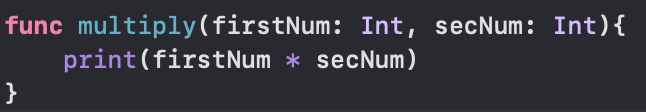

Functions
Functions are used to help writing the code. For exmple, if you have to check if its a nice weather, you can
create a nice weather function to see if its a nice weather and we can use the fucntion by writing ...().
Calculating
We can also make calculations using functions
Return